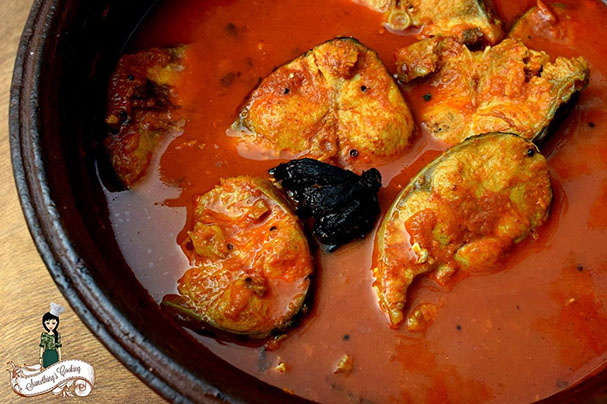

KERALA FISH CURRY

Description
Kerala Fish Curry or Kottayam Fish curry is the most popular and easiest fish curries from Kerala. It is also referred to as Red Fish Curry for it is cooked in red chillies and spices with a kick of coccum.
Kerala is divided when it comes to food. Look at this one now. There are many varieties of fish curries in Kerala and this one is my favorite. I hail from the Travancore region of Kerala, Kottayam. The specialty of this fish curry is that we use black coccum aka kudampulli in it unlike tamarind in other fish curries. Also, another major difference you can find is the absence of coconut.
It is said that fish curry made with coccum stays fresh for a longer period of time. At home, we keep it for a good 4-5 hours before serving. Authentic Kottayam Fish Curries are kept overnight. Thus, it is also called Yesterday's Fish curry. I keep for a couple of hours so that the spices get induced to the fish properly.
Traditionally this fish curry is made in a "man chatti" or clay pot. I used my normal brown clay pot. You can also try to make in the black clay pot as it helps in bringing out the taste of fish curry to perfection.
Ingridents
- Fish: ½kg You can use Mackerel
- Mustard seeds – 1 tsp
- Fenugreek (uluva) – ¼ tsp
- Ginger & garlic – 1½ tbsp, crushed into a fine paste
- Small onion – 6-8
- Kashmiri chili powder – 1½ – 2 tbsp
- Coriander powder – 1½ – 2 tbsp
- Turmeric powder – ½ tsp
- Cocum/kudampuli – 2,3 pieces
- Curry leaves
- Salt
- Coconut oil
Steps
- Soak coccum in little water for 10 minutes. Keep aside.
- Mix the chili,coriander & turmeric powders together with coconut oil/water to make a paste. Keep aside.
- Heat oil in a clay pot or a pan & splutter mustard & fenugreek.
- Add crushed ginger garlic paste & stir for a couple of minutes.
- Add small onion & curry leaves & saute till it becomes soft.
- Add the masala paste and salt & fry till oil starts appearing.
- Add coccum along with the water & fish pieces. Combine well. It will be safer to rotate the pan to ensure that fish & masala is mixed well.
- Add required amount of water. just so that the fish pieces are immersed in it & cook till the fish is done & gravy becomes thick, it will take around 20 -25 minutes on low flame.
- Keep aside for an hour. Serve with rice or kappa (tapioca)
Home